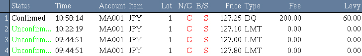

工作列表
该面板显示所有的已确认、未经确认的和已被取消的限价单。

-
Status - 执行状态，其中包含下类型：
Unconfirmed -
该指令善未经交易所确认成交，并且以绿色Unconfirmed
状态显示。
Confirmed
- 该指令已经交易所确认成交，并以黑色Confirmed状态显示。
Cancelled - 由于某些原因交易指令不能按预定成交，而被子取消，则显示为灰色
Cancelled。
该面板将以上述状态显示，直到用户退出系统为止。.
-
Time -
基于指令状态，显示指令提交或成交时间。
-
Account - 交易帐户
-
Item - 交易项目。
-
Lot - 交易指令数量。
-
N/C - N 表示新开仓指令 C 表示平仓指令。
-
B/S - B 表示买指令 S 表示卖指令。
-
Price - 基于指令状态，显示为设置交易指令时的价格。
-
Type - 指令所属交易类型。
-
Fee - 手续费。
-
Levy - 杂费。
用户想得到更多信息，可根据下面步骤完成：
用户可以双击想要操作的指令，打开未经确认指令信息对话框：
-
1. Reference no. - 指令序列号。
-
2. Item - 交易项目。
-
3. Price - 成交价格。
-
4. Buy/Sell - 指出该合约是买指令或是卖指令，若为买指令则窗口显示为蓝色，如果为卖指令则窗口显示为红色。
-
5.
Unit - 开仓合约数量
-
6. Account - 交易帐户。
-
7. Type - 指令所属交易类型。
-
8. Option - 限价指令单的better或stop选项。
-
9. Submit Time - 指令提交时间。
-
10 Expire Time - 指令未经确认的有效时间。
-
11 P/L & Fees - 平仓请求被接受时所有的交易盈亏描述。
-
12 Open Positions - 开仓指令信息。
-
13 Remarks - 返回指令交易状态的系统信息。
-
14 Cancel - 取消未确认状态的Limit/Stop/MOC/MOO指令按钮，cancel order，
-
15 Clear - 清除工作列表上的取消状态的指令按钮。
-
14 Exit - 退出当前对话框。